Katascope Bench Project
A $1000 triple-robot fabrication and computer vision system using commodity hardware.
Action videos
Robot arm plate manipulation
Automatic tool organizing
RAMPS system
RAMPS board
RAMPS case
U8GLIB
Gantry Robot
Robot Arm
Thingiverse Links
Robot Arm Design
Servo-Driven Suction Vacuum
Arm Suction Mount
Limit-Switch additions
Fabricator
Vision System
ARUCO tags
EMGU C# wrapper for OpenCV
Construction progress
Bench
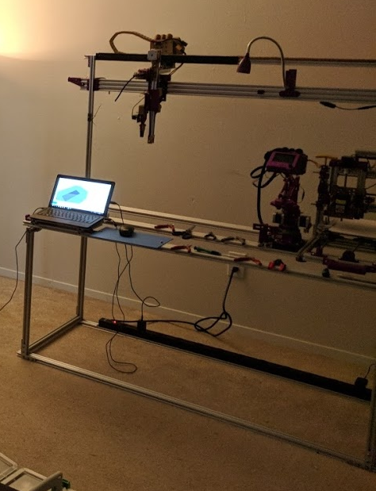
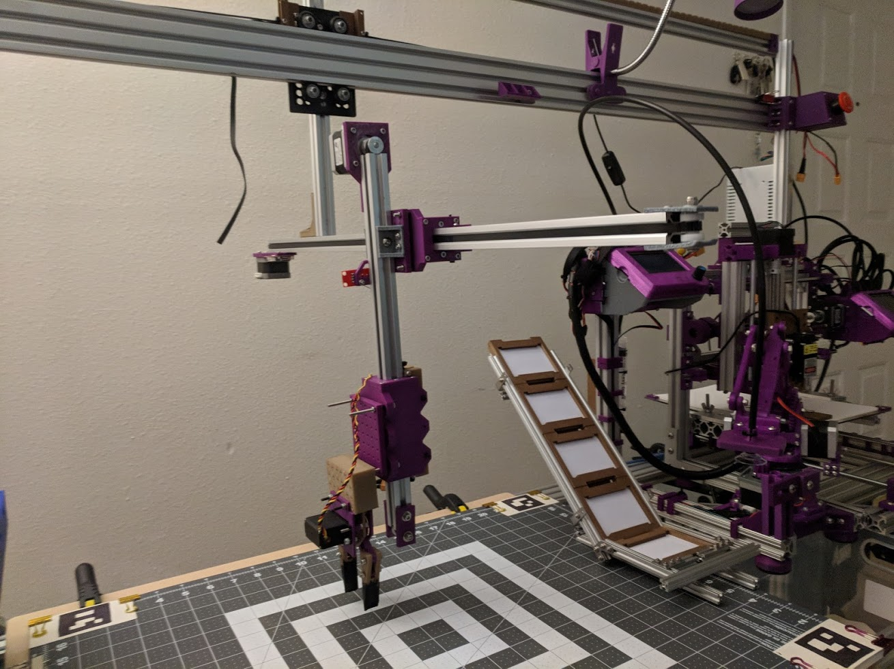
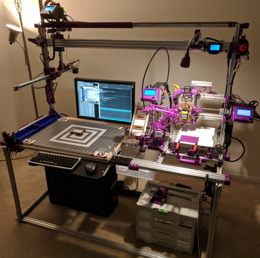
Fabricator closeup
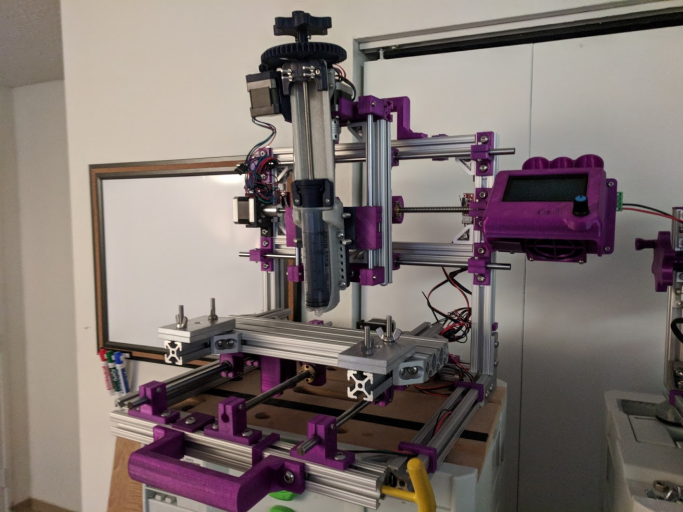
Development progress pic of software
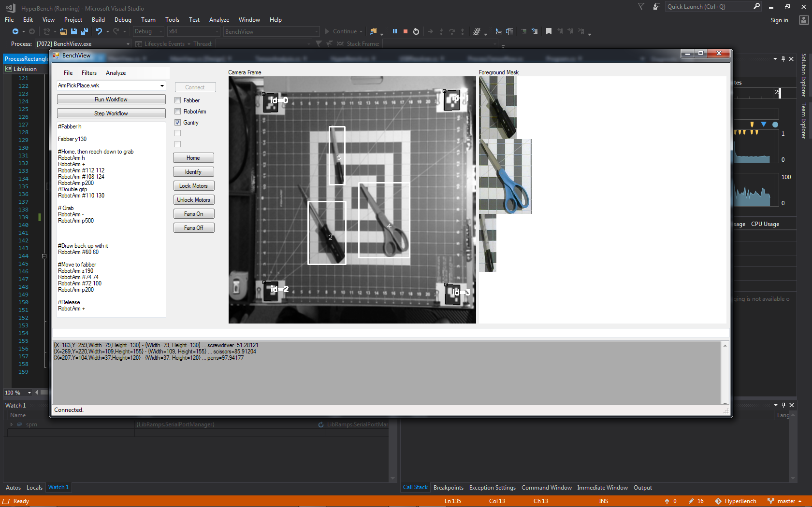
Test camera rig
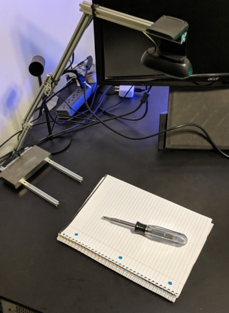
The computer vision system uses a simple overhead webcam, OpenCV, and Tensorflow.. with a little custom image processing code.
For basic development and testing a test rig was created for writing the integration code. This eased development and had the added benefit of having different distances and lighting conditions which helped the robustness of the final system installed to the bench.
Print plate construction
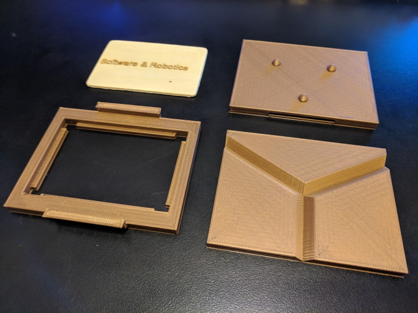
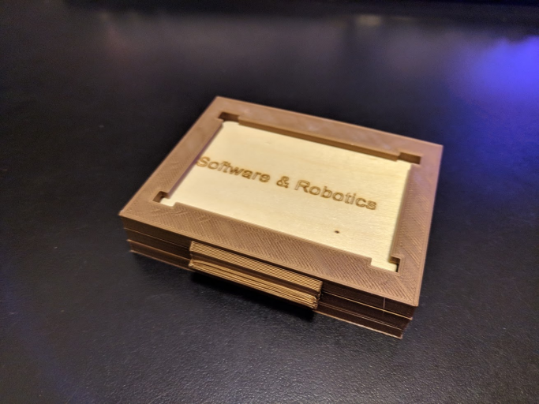
Maxwell Kinematic Coupler
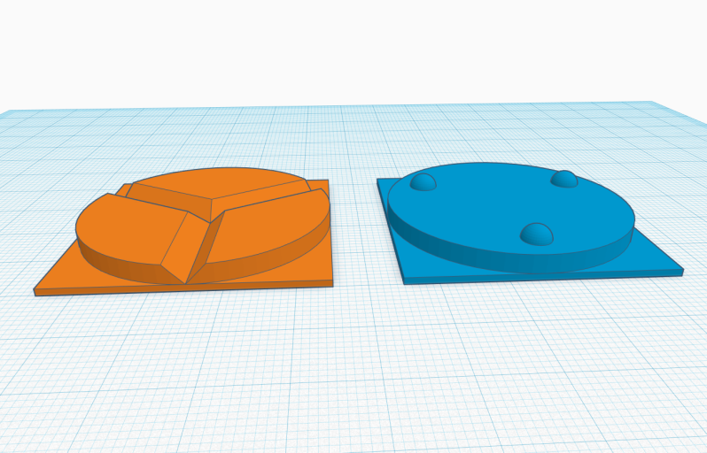
The Maxwell Kinematic Coupling helps ensure proper seating of the plates into the fabricator by the robot arm. It also prevents motion during the engraving process.
Maxwell Kinematic Coupling: https://en.wikipedia.org/wiki/Kinematic_coupling
Autoclean Algorithm
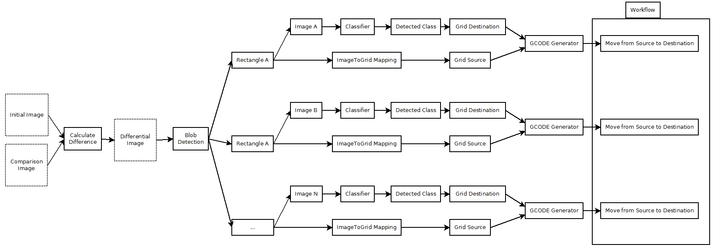
Project costs
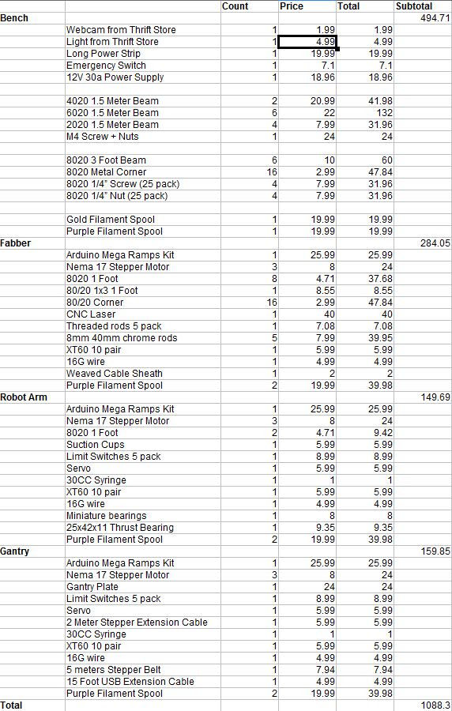